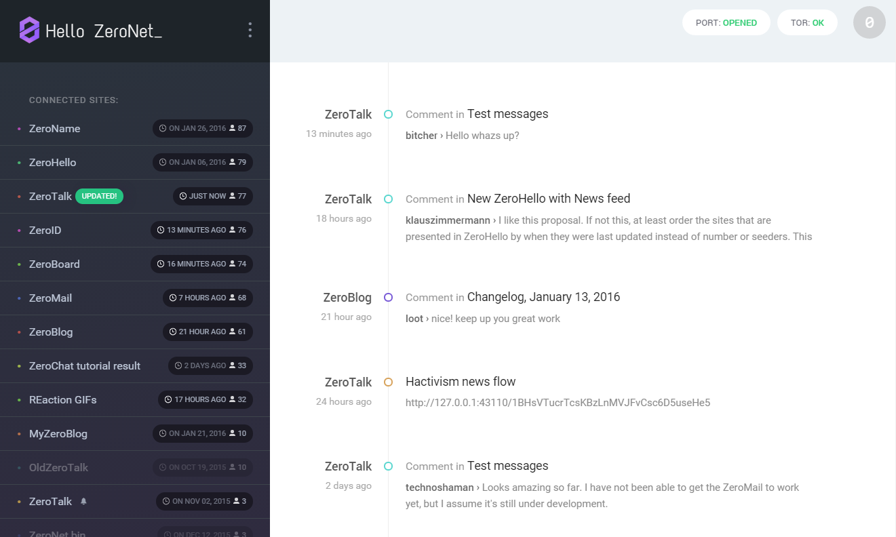

TOП-50 Python-проектов в 2018: самые востребованные инструменты
Мы составили список из 50 самых популярных Python-проектов для машинного обучения, веб-разработки, моделирования и других задач.
Обсудить
Отбор лучших Python-проектов
В список вошли только open-source продукты, бесплатные и доступные всем. Эти библиотеки, фреймворки и утилиты стали самыми востребованными среди программистов в текущем году. Их репозитории активно развиваются и улучшаются. Каждый уважающий себя питонист должен с ними познакомиться, тем более, что они затрагивают почти все популярные направления разработки.
Каждый, кто интересуется машинным обучением, точно слышал о TensorFlow.
TensorFlow Models – это репозиторий с открытым исходным кодом, в котором можно найти множество библиотек и моделей глубокого обучения.
Статьи по теме:
Introduction and usage of TensorFlow in Python
2) Keras
Keras – это высокоуровневый API нейронных сетей, написанный на Python и способный работать поверх TensorFlow, CNTK или Theano. Он был разработан специально для постановки быстрых экспериментов.
Статьи по теме:
Introduction and usage of Keras
3) Flask
Один из самых легких фреймворков для веб-разработки по стандарту WSGI. Он предназначен для быстрого запуска приложений с возможностью масштабирования.
Flask стартовал как простая обертка для Werkzeug и Jinja, но стал одним из самых востребованных Python-проектов.
Статьи по теме:
Introduction and usage of Flask
Введение в создание веб-приложений на Python
4) scikit-learn
scikit-learn – это модуль для машинного обучения, созданный поверх SciPy и распространяемый по лицензии BSD 3-Clause.
Статьи по теме:
Introduction and usage of SciKits
5) Zulip
Мощный групповой чат, сочетающий скорость обработки в реальном времени и производительность потокового режима. Приложение используется компаниями из списка Fortune 500, крупными организациями стандартизации и всеми, кому нужен надежный чат в режиме реального времени, способный обрабатывать тысячи сообщений в день. Zulip является одним из самых крупных и активно развивающихся открытых Python-проектов. В его репозитории больше 400 участников, делающих по 500 и более коммитов в месяц.
Статьи по теме:
Introduction and usage of Zulip
6) Django
Django – высокоуровневый веб-фреймворк, способствующий быстрой разработке в чистом, прагматичном стиле.
Статьи по теме:
Django articles
10 лучших материалов для изучения Django
7) Rebound
Хотите сэкономить время на дебаггинге? Когда в процессе разработки компилятор выдает ошибку, больше не нужно отправляться за подсказкой на просторы Stack Overflow. Один из самых полезных Python-проектов для командной строки Rebound мгновенно извлекает с сервиса релевантные ответы.
Статьи по теме:
Отладка программы: 3 типа ошибок
Утилита командной строки, которая позволяет искать изображения в Google Images по ключевым словам или фразам и загружать их на компьютер.
Скрипт также можно запускать из любого python-файла.
Статьи по теме:
How to use Google API in Python
9) YouTube-dl
Используется для загрузки видео с youtube.com или других платформ.
Статьи по теме:
How to use Youtube in python
В этом репозитории собрана целая коллекция ресурсов, которая поможет научиться построению масштабируемых систем.
Статьи по теме:
Introduction and usage of System Design Primer
11) Mask R-CNN
Библиотека Mask R-CNN предназначена для обнаружения объектов и сегментации изображений. Она реализована на Python 3, Keras и TensorFlow. Для каждого объекта на картинке программа генерирует ограничивающие контейнеры и маски сегментации. Работа проекта основана на Feature Pyramid Network (FPN) и ResNet101.
Статьи по теме:
Introduction and usage of R-cnn in python
12) Face Recognition
Распознавайте и управляйте лицами из python-скриптов или из терминала с помощью самой простой в мире библиотеки распознавания лиц. Она также предоставляет консольную команду face_recognition, которая позволяет распознавать лица в папке изображений!
Статьи по теме:
How to use Face Recognition in python
Как работает FaceID в iPhone X: алгоритм на языке Python
13) snallygaster
Инструмент для просмотра защищенных файлов на HTTP-серверах.
Статьи по теме:
Introducing Snallygaster - a Tool to Scan for Secrets on Web Servers
14) Ansible
Ansible – это радикально простая система автоматизации. Она обеспечивает управление конфигурацией, развертывание приложений, создание облаков, выполнение специальных задач и многоуровневое управление, включая обновление с нулевым временем простоя и балансировщики нагрузки.
Статьи по теме:
Introduction and usage of Ansible
15) Detectron
Detectron входит в систему Facebook AI Research, которая реализует самые современные алгоритмы обнаружения объектов, включая Mask R-CNN. Это один из Python-проектов, основанных на системе глубокого обучения Caffe2.
Статьи по теме:
Introduction and usage of Detectron
16) asciinema
Средство для записи сеансов работы в командной строке. Отлично сочетается с asciinema.org.
Статьи по теме:
Introduction and usage of Ascinema in python
17) HTTPie
Консольный HTTP-клиент, упрощающий общение с веб-сервисами. Позволяет отправлять любые HTTP-запросы и отображать результат с подсветкой синтаксиса. Проект идеально подходит для тестирования, отладки и общего взаимодействия с серверами.
18) You-Get
You-Get – это крошечная консольная утилита, предназначенная для загрузки медиа-контента (видео, аудио, изображений) из Интернета, если нет другого удобного способа сделать это.
19) Sentry

Sentry – это сервис, который помогает отслеживать и исправлять сбои в реальном времени. Проект написан на Python, но содержит полноценный API для отправки событий с любого языка в любом приложении.
20) Tornado
Один из самых популярных Python-проектов для веб-разработки с асинхронной сетевой библиотекой, разработанный FriendFeed. Благодаря неблокирующим операциям ввода-вывода, фреймворк может поддерживать десятки тысяч открытых подключений одновременно. Это позволяет использовать длинные опросы, веб-сокеты и другие технологии, которые требуют долговременной связи с каждым пользователем.
21) Magenta
Magenta – исследовательский проект, посвященный роли машинного обучения в искусстве и музыке. В первую очередь он связан с разработкой новых алгоритмов глубокого обучения с подкреплением для генерации песен, изображений, рисунков и других материалов. С другой стороны, это также исследование в области создания интеллектуальных инструментов и интерфейсов, которые позволяют художникам и музыкантам расширять диапазон своего творчества.
22) ZeroNet

Создавайте распределенные веб-сайты с использованием Bitcoin и сети BitTorrent.
23) Gym

OpenAI Gym – это инструментарий для разработки и сравнения алгоритмов обучения с подкреплением. Это библиотека с открытым исходным кодом, которая дает доступ к стандартизованному набору сред.
Статьи по теме:
Введение в обучение с подкреплением в Python
24) Pandas
Pandas – это пакет Python, предоставляющий быстрые, гибкие и понятные структуры, предназначенные для простой и интуитивно понятной работы с «реляционными» или «помеченными» данными. Этот развивающийся инструмент может в будущем стать один из самых мощных и гибких Python-проектов для практического анализа данных с поддержкой других языков.
Статьи по теме:
Python для Data Science: 8 понятий, которые важно помнить
25) Luigi
Luigi помогает создавать сложные конвейеры пакетных заданий. Среди его возможностей разрешение зависимостей, управление рабочим процессом, визуализация, обработка сбоев, интеграция с командной строкой и многое другое.
spaCy – это библиотека для продвинутой обработки естественного языка в Python и Cython. Она создана на базе самых последних исследований и изначально разрабатывалась для использования в реальных продуктах. spaCy поставляется с заранее подготовленными статистическими моделями и векторами слов. В настоящее время она поддерживает токенизацию для более чем 20 языков. Проект имеет самый быстрый в мире синтаксический анализатор, сверточные модели нейронных сетей для тегов, разбора и распознавания имен объектов и легкой интеграции с глубоким обучением.
27) Theano
Theano – это библиотека Python, которая позволяет эффективно определять, оптимизировать и оценивать математические выражения, содержащие многомерные массивы. Она может использовать графические процессоры и выполнять эффективную символическую дифференциацию.
28) TFlearn
TFlearn – это модульная и прозрачная библиотека глубокого обучения, построенная на основе TensorFlow. Она изначально была разработана для предоставления API более высокого уровня, чем TensorFlow, чтобы облегчить и ускорить эксперименты, оставаясь полностью прозрачным и совместимым с ним.
29) Kivy
Kivy – это кросс-платформенный проект для разработки приложений с инновационными пользовательскими multi-touch интерфейсами. Цель программы состоит в том, чтобы обеспечить быстрый и легкий дизайн и прототипирование, а также переиспользуемость и развертываемость кода.
30) Mailpile
Mailpile – это современный, быстрый почтовый клиент с удобными функциями шифрования и конфиденциальности. Это один из самых активных Python-проектов, его разработка финансируется большим сообществом сторонников. Весь код, связанный с проектом, будет выпущен под лицензией Free Software, утвержденной OSI.
31) Matplotlib
Matplotlib – это кросс-платформенная библиотека построения высококачественных 2D графиков в различных печатных форматах и интерактивных средах. Ее можно запускать в скриптах, командных оболочках Python и IPython, на веб-серверах и в различных графических интерфейсах.
32) YAPF (by Google)
YAPF переформатирует код в соответствии с заданными стилевыми правилами.
33) Cookiecutter
Утилита командной строки, которая создает проекты из шаблонов.
34) HTTP Prompt
Http Prompt – это интерактивный консольный HTTP-клиент, поддерживающий автодополнение и подсветку синтаксиса. Программа основана на других python-проектах: HTTPie и prompt_toolkit.
35) speedtest-cli
Интерфейс командной строки для тестирования пропускной способности интернета с помощью speedtest.net.
36) Pattern
Pattern – это модуль веб-майнинга. Он имеет инструменты для интеллектуального анализа данных, обработки естественного языка, машинного обучения и сетевого анализа.
37) Gooey (Beta)
Превратите почти любую консольную программу, написанную на Python 2 или Python 3, в графическое приложение с помощью одной строки.
38) Wagtail CMS
Wagtail – это система управления контентом, построенная на Django. Она ориентирована на взаимодействие с пользователем и обеспечивает полный контроль над проектом для дизайнеров и разработчиков.
39) Bottle
Bottle – легкий WSGI веб-фреймворк, состоящий всего из одного файлового модуля и не имеющий сторонних зависимостей.
Prophet предназначен для анализа и прогнозирования временных рядов. Он основан на аддитивной модели, в которой нелинейные тренды соответствуют годовой и недельной сезонности, а также праздникам. Программа лучше всего работает, если имеется, по крайней мере, один год исторических данных. Prophet устойчив к отсутствующим данным, сдвигам в тренде и большим выбросам.
41) Falcon
Falcon – это надежный высокопроизводительный веб-фреймворк, предназначенный для создания крупномасштабных бэкэндов приложений и микросервисов. Он поддерживает архитектурный стиль REST, и старается производить минимум действий, сохраняя высокую эффективность.
42) Mopidy
Mopidy – это расширяемый музыкальный сервер, написанный на Python. Он может воспроизводить музыку с локального диска, Spotify, SoundCloud, Google Play Music и многих других ресурсов. Список воспроизведения можно редактировать с любого телефона, планшета или компьютера, используя ряд MPD и веб-клиентов.
43) Hug
Hug стремится сделать разработку Python driven API как можно более простой, но не примитивной, значительно облегчая разработку API.
44) SymPy
Библиотека Python для символьной математики.
45) Dash
Dash – это Платформа Python для создания аналитических веб-приложений. Не требует использования JavaScript.
46) Visdom
Гибкий инструмент для создания, обработки и публикации визуализаций живых, богатых данных. Поддерживает Torch и Numpy.
47) LUMINOTH
Luminoth – инструмент компьютерного зрения с открытым исходным кодом. В настоящее время он поддерживает обнаружение объектов, но стремится к большему. Программа основана на других python-проектах: TensorFlow и Sonnet.
48) Pygame
Pygame – это кросс-платформенная библиотека, предназначенная для упрощения написания мультимедийного программного обеспечения, например, игр.
49) Requests
Requests – это библиотека Python, которая позволяет отправлять запросы HTTP / 1.1, добавлять заголовки, данные форм, составные файлы и параметры с помощью простых словарей. Она также позволяет получить доступ к данным ответа.
50) Statsmodels
Statsmodels – это дополнение к scipy для статистических вычислений, включающее описательную статистику и вывод для статистических моделей.
Надеемся, что вы нашли что-нибудь интересное в списке 50 лучших Python-проектов 2018 года.
Перевод статьи Bily809: 50 Most Popular Python Projects in 2018
Юридические особенности запуска мобильных приложений
23 ноября Онлайн Бесплатно + Показать еще
ВАКАНСИИ Добавить вакансию
по итогам собеседования
Администратор баз данных (DBA)
от 250000 RUB до 300000 RUB
Санкт-Петербург, от 180000 RUB до 200000 RUB + Показать еще Опубликовать вакансию
ЛУЧШИЕ СТАТЬИ ПО ТЕМЕ
13 лучших книг по Python для начинающих и продолжающих
3 самых важных сферы применения Python: возможности языка